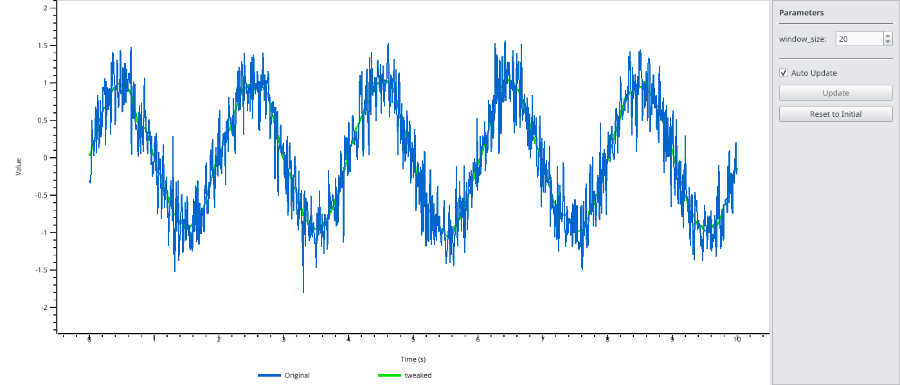
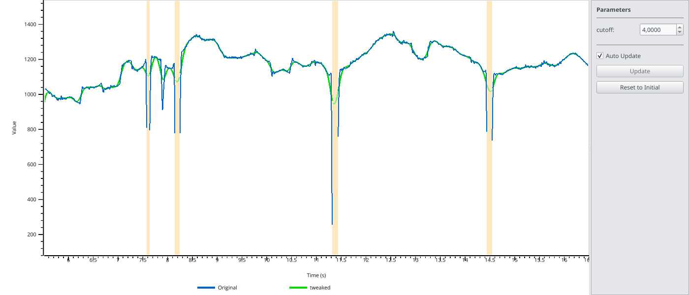
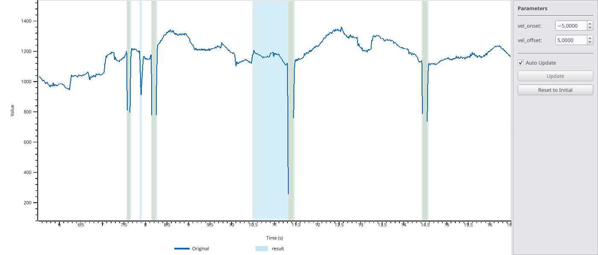

Interactive Parameter Tweaking (pp.tweak)#
The tweak() function provides an interactive way to tune function parameters while seeing the result in real-time. The original data is displayed with the function result overlaid, and a parameter panel allows you to adjust values and immediately see the effect.
Keyboard shortcuts: Press H or ? in the viewer to see all available keyboard shortcuts for navigation and toggling display options.
Basic Usage with Arrays#
The simplest use case is tweaking a function applied to numpy arrays:
import numpy as np
import pypillometry as pp
# Create noisy signal
t = np.linspace(0, 10, 1000)
signal = np.sin(2 * np.pi * 0.5 * t) + np.random.randn(1000) * 0.3
# Define a smoothing function
def smooth(data, window_size=20):
kernel = np.ones(int(window_size)) / int(window_size)
return np.convolve(data, kernel, mode='same')
# Tweak the window_size parameter interactively
final_params = pp.tweak(signal, smooth, {'window_size': 20}, time=t)
print(f"Final window_size: {final_params['window_size']}")


The blue line shows the original data, and the green line shows the result of the function with the current parameters. Adjust parameters in the panel on the right.
Tweaking EyeData Processing#
For pupillometry analysis, you often need to tune filter parameters. The tweak() function works with EyeData objects - the function receives the full EyeData and should return an EyeData:
import pypillometry as pp
eyedata = pp.get_example_data("rlmw_002_short")
# Define a function that applies lowpass filtering
def lowpass(data, cutoff=4.0):
return data.pupil_lowpass_filter(cutoff=cutoff, inplace=False)
# Tweak the cutoff frequency
final_params = pp.tweak(
eyedata,
lowpass,
{'cutoff': 4.0},
variable='left_pupil'
)
print(f"Final cutoff: {final_params['cutoff']} Hz")


The variable parameter specifies which channel to display (e.g., 'left_pupil', 'right_pupil').
Tweaking Blink Detection#
Another common use case is tuning blink detection parameters. Functions can return Intervals objects, which are displayed as highlighted regions:
import pypillometry as pp
eyedata = pp.get_example_data("rlmw_002_short")
# Define a function that detects blinks and returns intervals
def detect_blinks(data, vel_onset=-5.0, vel_offset=5.0):
blinks = data.pupil_blinks_detect(
apply_mask=False,
vel_onset=vel_onset,
vel_offset=vel_offset
)
return blinks.get('left_pupil') # Returns Intervals
# Tweak the velocity thresholds
final_params = pp.tweak(
eyedata,
detect_blinks,
{'vel_onset': -5.0, 'vel_offset': 5.0},
variable='left_pupil'
)


Detected intervals are shown as highlighted regions. Press I to toggle interval visibility.
GUI Controls#
The parameter panel on the right side of the window provides:
Spinboxes for each parameter - adjust values by typing or using the arrows
Auto Update checkbox - when enabled, the plot updates immediately when you change a parameter
Update button - when auto-update is disabled, click to apply changes (or press
Enterin a parameter field)Reset to Initial button - restore all parameters to their initial values
For computationally expensive functions, disable auto-update and use the Update button (or Enter) to avoid lag.
Return Values#
Functions passed to tweak() can return different types:
numpy array: Displayed as an overlay line
dict of arrays: Multiple overlay lines with different colors
Intervals object: Displayed as highlighted regions
dict with arrays and Intervals: Both overlay lines and highlighted regions
Example returning multiple outputs:
import numpy as np
import pypillometry as pp
eyedata = pp.get_example_data("rlmw_002_short")
def process(data, cutoff=4.0, vel_onset=-5.0):
# Apply filter
filtered = data.pupil_lowpass_filter(cutoff=cutoff, inplace=False)
filtered_signal = np.array(filtered['left_pupil'])
# Detect blinks
blinks = data.pupil_blinks_detect(apply_mask=False, vel_onset=vel_onset)
# Return both
return {
'filtered': filtered_signal,
'blinks': blinks.get('left_pupil')
}
final_params = pp.tweak(
eyedata,
process,
{'cutoff': 4.0, 'vel_onset': -5.0},
variable='left_pupil'
)
API reference#
All parameters are documented in the API reference: tweak().